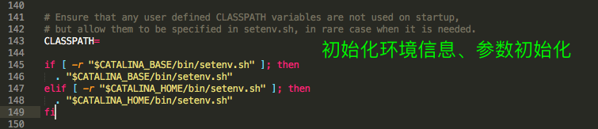

原文连接:https://www.cnblogs.com/zhiyouwu/p/11737697.html
Tomcat启动加载过程（一）的源码解析
今天，我将分享用源码的方式讲解Tomcat启动的加载过程，关于Tomcat的架构请参阅《Tomcat源码分析二：先看看Tomcat的整体架构》一文。
先看看应用情况
在《Servlet与Tomcat运行示例》一文中，我详细的记录了Tomcat是如何启动一个Servlet的程序的步骤。其中，第6步骤是启动Tomcat，也就是在windows系统上执行startup.bat， 在linux操作系统上执行startup.sh的脚本。那么，我们就从这个脚本出发，走进Tomcat，看看它是如何启动的？这里，我们以startup.sh为例，windows端的startup.bat类似。
startup.sh的内容是什么？
我们先看看tomcat的启动脚本startup.sh的内容是什么，先看看其脚本内容(省略部分注释)，如下：
#!/bin/sh
# -----------------------------------------------------------------------------
# Start Script for the CATALINA Server
# -----------------------------------------------------------------------------
# Better OS/400 detection: see Bugzilla 31132
os400=false
case "`uname`" in
OS400*) os400=true;;
esac
# resolve links - $0 may be a softlink
PRG="$0"
while [ -h "$PRG" ] ; do
ls=`ls -ld "$PRG"`
link=`expr "$ls" : '.*-> \(.*\)$'`
if expr "$link" : '/.*' > /dev/null; then
PRG="$link"
else
PRG=`dirname "$PRG"`/"$link"
fi
done
PRGDIR=`dirname "$PRG"`
EXECUTABLE=catalina.sh
# Check that target executable exists
if $os400; then
# -x will Only work on the os400 if the files are:
# 1. owned by the user
# 2. owned by the PRIMARY group of the user
# this will not work if the user belongs in secondary groups
eval
else
if [ ! -x "$PRGDIR"/"$EXECUTABLE" ]; then
echo "Cannot find $PRGDIR/$EXECUTABLE"
echo "The file is absent or does not have execute permission"
echo "This file is needed to run this program"
exit 1
fi
fi
exec "$PRGDIR"/"$EXECUTABLE" start "$@"
提取其中主要的几句：
PRGDIR=`dirname "$PRG"`
EXECUTABLE=catalina.sh
exec "$PRGDIR"/"$EXECUTABLE" start "$@"简而概之，该脚本的执行内容为：调用catalina.sh脚本。下面，我们继续来看下catalina.sh脚本的内容
catalina.sh脚本
由于catalina.sh脚本内容比较多，这里提取一些重要的内容，然后解释其用途：

再简要的描述下在catalina.sh中作用：完成环境检查、环境初始化、参数初始化、启动操作步骤。注意一下上图中被绿色框出来的内容，可以看到其调用执行的是org.apache.catalina.startup.Bootstrap类，并且传输过去的command指令为start。
回归Java代码
Bootstrap类进行了什么操作呢？
接下来，我们带着这几个问题来去探索一下Bootstrap类：
- Bootstrap类在接收到start指令后要去干什么？
- Bootstrap类在启动过程中的职责是什么？
下面，我们带着上面的几个问题来具体的探讨一下Tomcat的源码。先来看看Bootstrap类的main方法：
public static void main(String args[]) {
synchronized (daemonLock) {
if (daemon == null) {
// Don't set daemon until init() has completed
Bootstrap bootstrap = new Bootstrap();
try {
bootstrap.init();
} catch (Throwable t) {
handleThrowable(t);
t.printStackTrace();
return;
}
daemon = bootstrap;
} else {
Thread.currentThread().setContextClassLoader(daemon.catalinaLoader);
}
}
try {
String command = "start";
if (args.length > 0) {
command = args[args.length - 1];
}
if (command.equals("startd")) {
args[args.length - 1] = "start";
daemon.load(args);
daemon.start();
} else if (command.equals("stopd")) {
args[args.length - 1] = "stop";
daemon.stop();
} else if (command.equals("start")) {
daemon.setAwait(true);
daemon.load(args);
daemon.start();
if (null == daemon.getServer()) {
System.exit(1);
}
} else if (command.equals("stop")) {
daemon.stopServer(args);
} else if (command.equals("configtest")) {
daemon.load(args);
if (null == daemon.getServer()) {
System.exit(1);
}
System.exit(0);
} else {
log.warn("Bootstrap: command \"" + command + "\" does not exist.");
}
} catch (Throwable t) {
// Unwrap the Exception for clearer error reporting
if (t instanceof InvocationTargetException &&
t.getCause() != null) {
t = t.getCause();
}
handleThrowable(t);
t.printStackTrace();
System.exit(1);
}
}从这段代码中，可以看出，其主要实现了两个功能：
- 初始化一个守护进程变量daemon
- 加载catalina.sh传递过来的参数，解析catalina.sh传递过来的指令，并按照指令执行程序，控制守护进程daemon的启停等操作
bootstrap.init();有什么操作呢？
针对上面的两个功能，我们进入到 init()方法看下有什么操作，先看下init()方法的代码：
public void init() throws Exception {
initClassLoaders();
Thread.currentThread().setContextClassLoader(catalinaLoader);
SecurityClassLoad.securityClassLoad(catalinaLoader);
// Load our startup class and call its process() method
if (log.isDebugEnabled())
log.debug("Loading startup class");
Class<?> startupClass = catalinaLoader.loadClass("org.apache.catalina.startup.Catalina");
Object startupInstance = startupClass.getConstructor().newInstance();
// Set the shared extensions class loader
if (log.isDebugEnabled())
log.debug("Setting startup class properties");
String methodName = "setParentClassLoader";
Class<?> paramTypes[] = new Class[1];
paramTypes[0] = Class.forName("java.lang.ClassLoader");
Object paramValues[] = new Object[1];
paramValues[0] = sharedLoader;
Method method =
startupInstance.getClass().getMethod(methodName, paramTypes);
method.invoke(startupInstance, paramValues);
catalinaDaemon = startupInstance;
}在init()方法中，首先执行的方法initClassLoaders()的作用是初始化三个类加载器，代码如下：
/**
* Daemon reference.
*/
private Object catalinaDaemon = null;
ClassLoader commonLoader = null;
ClassLoader catalinaLoader = null;
ClassLoader sharedLoader = null;
private void initClassLoaders() {
try {
commonLoader = createClassLoader("common", null);
if (commonLoader == null) {
// no config file, default to this loader - we might be in a 'single' env.
commonLoader = this.getClass().getClassLoader();
}
catalinaLoader = createClassLoader("server", commonLoader);
sharedLoader = createClassLoader("shared", commonLoader);
} catch (Throwable t) {
handleThrowable(t);
log.error("Class loader creation threw exception", t);
System.exit(1);
}
}
private ClassLoader createClassLoader(String name, ClassLoader parent)
throws Exception {
String value = CatalinaProperties.getProperty(name + ".loader");
if ((value == null) || (value.equals("")))
return parent;
value = replace(value);
List<Repository> repositories = new ArrayList<>();
String[] repositoryPaths = getPaths(value);
for (String repository : repositoryPaths) {
// Check for a JAR URL repository
try {
@SuppressWarnings("unused")
URL url = new URL(repository);
repositories.add(new Repository(repository, RepositoryType.URL));
continue;
} catch (MalformedURLException e) {
// Ignore
}
// Local repository
if (repository.endsWith("*.jar")) {
repository = repository.substring
(0, repository.length() - "*.jar".length());
repositories.add(new Repository(repository, RepositoryType.GLOB));
} else if (repository.endsWith(".jar")) {
repositories.add(new Repository(repository, RepositoryType.JAR));
} else {
repositories.add(new Repository(repository, RepositoryType.DIR));
}
}
return ClassLoaderFactory.createClassLoader(repositories, parent);
}
// catalina.properties
common.loader="${catalina.base}/lib","${catalina.base}/lib/*.jar","${catalina.home}/lib","${catalina.home}/lib/*.jar"- commonLoader: 根据common.loader属性的配置(通过代码
CatalinaProperties.getProperty(name + ".loader");读取：catalina.properties), 创建commonLoader类加载器, 默认情况下顺序加载 ${catalina.base}/lib, ${catalina.base}/lib/.jar, ${catalina.home}/lib, ${catalina.home}/lib/.jar 四个目录下的class和jar. - catalinaLoader: 根据server.loader属性的配置, 创建catalinaLoader类加载器，其父类加载其为commonLoader, 默认server.loader属性为空, 直接使用commonLoader.
- sharedLoader:根据shared.loader属性配置,创建sharedLoader类加载器，其父类加载其为commonLoader, 默认shared.loader属性为空, 直接使用commonLoader.
当执行完initClassLoaders()方法之后，调用Thread.currentThread().setContextClassLoader(catalinaLoader);设置上下文类加载器为catalinaLoader，从上面解析的情况看，其实设置的上下文类加载器为catalinaLoader的父类commonLoader。
SecurityClassLoad.securityClassLoad(catalinaLoader) 的作用是如果有SecurityManager，提前加载部分类。
之后，通过使用catalinaLoader加载org.apache.catalina.startup.Catalina类，创建实例Catalina并利用反射调用方法setParentClassLoader()，设置Catalina实例的parentClassLoader属性为sharedLoader类加载器（也就是commonLoader）。
最后，设置daemon为新创建的实例Bootstrap。接下来，看一下main()方法下的指令处理。
传递过来的command指令是如何处理的呢？
我们观察一下main()方法的后半段，这里贴一下代码：
try {
String command = "start";
if (args.length > 0) {
command = args[args.length - 1];
}
if (command.equals("startd")) {
args[args.length - 1] = "start";
daemon.load(args);
daemon.start();
} else if (command.equals("stopd")) {
args[args.length - 1] = "stop";
daemon.stop();
} else if (command.equals("start")) {
daemon.setAwait(true);
daemon.load(args);
daemon.start();
if (null == daemon.getServer()) {
System.exit(1);
}
} else if (command.equals("stop")) {
daemon.stopServer(args);
} else if (command.equals("configtest")) {
daemon.load(args);
if (null == daemon.getServer()) {
System.exit(1);
}
System.exit(0);
} else {
log.warn("Bootstrap: command \"" + command + "\" does not exist.");
}
} catch (Throwable t) {
// ...... 省略
}可以看到，其默认指令为start， 然后，其根据接收到的参数区分为startd、stopd、start、stop、configtest和其他6种指令情况。这里我们主要看一下start指令的执行逻辑。
- daemon.setAwait(true) ：这句代码有什么含义呢，下面我们来具体的分析一下：
/**
* Set flag.
* @param await <code>true</code> if the daemon should block
* @throws Exception Reflection error
*/
public void setAwait(boolean await)
throws Exception {
Class<?> paramTypes[] = new Class[1];
paramTypes[0] = Boolean.TYPE;
Object paramValues[] = new Object[1];
paramValues[0] = Boolean.valueOf(await);
Method method =
catalinaDaemon.getClass().getMethod("setAwait", paramTypes);
method.invoke(catalinaDaemon, paramValues);
}这段代码的主要作用是通过反射调用Catalina.setAwait(true)，主要目的是当启动完成后， 阻塞main线程，等待stop命令到来。 如果不设置daemon.setAwait(true)， 则main线程执行完之后就 直接退出了。
- daemon.load(args)
daemon.load(args);其实是最终执行的Catalina.load()，在Catalina.load()方法中，主要功能是首先初始化temp目录，然后再初始化naming的一些系统属性，然后获取server.xml配置文件, 创建Digester实例, 开始解析server.xml的操作。
/**
* Start a new server instance.
*/
public void load() {
if (loaded) {
return;
}
loaded = true;
long t1 = System.nanoTime();
initDirs();
// Before digester - it may be needed
initNaming();
// Set configuration source
ConfigFileLoader.setSource(new CatalinaBaseConfigurationSource(Bootstrap.getCatalinaBaseFile(), getConfigFile()));
File file = configFile();
// Create and execute our Digester
Digester digester = createStartDigester();
try (ConfigurationSource.Resource resource = ConfigFileLoader.getSource().getServerXml()) {
InputStream inputStream = resource.getInputStream();
InputSource inputSource = new InputSource(resource.getURI().toURL().toString());
inputSource.setByteStream(inputStream);
digester.push(this);
digester.parse(inputSource);
} catch (Exception e) {
log.warn(sm.getString("catalina.configFail", file.getAbsolutePath()), e);
if (file.exists() && !file.canRead()) {
log.warn(sm.getString("catalina.incorrectPermissions"));
}
return;
}
getServer().setCatalina(this);
getServer().setCatalinaHome(Bootstrap.getCatalinaHomeFile());
getServer().setCatalinaBase(Bootstrap.getCatalinaBaseFile());
// Stream redirection
initStreams();
// Start the new server
try {
getServer().init();
} catch (LifecycleException e) {
if (Boolean.getBoolean("org.apache.catalina.startup.EXIT_ON_INIT_FAILURE")) {
throw new java.lang.Error(e);
} else {
log.error(sm.getString("catalina.initError"), e);
}
}
long t2 = System.nanoTime();
if(log.isInfoEnabled()) {
log.info(sm.getString("catalina.init", Long.valueOf((t2 - t1) / 1000000)));
}
}
- daemon.start()： 启动Tomcat
通过调用daemon.start()启动Tomcat，其内容如下：
/**
* Start the Catalina daemon.
* @throws Exception Fatal start error
*/
public void start() throws Exception {
if (catalinaDaemon == null) {
init();
}
Method method = catalinaDaemon.getClass().getMethod("start", (Class [])null);
method.invoke(catalinaDaemon, (Object [])null);
}程序通过反射的方式调用Catalina.start()方式启动Tomcat，下面，我们看下Catalina.start()方法的实现逻辑：
/**
* Start a new server instance.
*/
public void start() {
if (getServer() == null) {
load();
}
if (getServer() == null) {
log.fatal(sm.getString("catalina.noServer"));
return;
}
long t1 = System.nanoTime();
// Start the new server
try {
getServer().start();
} catch (LifecycleException e) {
log.fatal(sm.getString("catalina.serverStartFail"), e);
try {
getServer().destroy();
} catch (LifecycleException e1) {
log.debug("destroy() failed for failed Server ", e1);
}
return;
}
long t2 = System.nanoTime();
if(log.isInfoEnabled()) {
log.info(sm.getString("catalina.startup", Long.valueOf((t2 - t1) / 1000000)));
}
// Register shutdown hook
if (useShutdownHook) {
if (shutdownHook == null) {
shutdownHook = new CatalinaShutdownHook();
}
Runtime.getRuntime().addShutdownHook(shutdownHook);
// If JULI is being used, disable JULI's shutdown hook since
// shutdown hooks run in parallel and log messages may be lost
// if JULI's hook completes before the CatalinaShutdownHook()
LogManager logManager = LogManager.getLogManager();
if (logManager instanceof ClassLoaderLogManager) {
((ClassLoaderLogManager) logManager).setUseShutdownHook(
false);
}
}
if (await) {
await();
stop();
}
}
可以看出，程序调用getServer().start()启动，getServer()方法返回的是一个StandardServer类，继而其调用的是StandardServer.startInternal()方法，在StandardServer中，又调用到StandardService.startInternal()方法。
// StandardServer.java
protected void startInternal() throws LifecycleException {
fireLifecycleEvent(CONFIGURE_START_EVENT, null);
setState(LifecycleState.STARTING);
globalNamingResources.start();
// Start our defined Services
synchronized (servicesLock) {
for (int i = 0; i < services.length; i++) {
services[i].start();
}
}
// ......省略部分代码
}
protected void startInternal() throws LifecycleException {
if(log.isInfoEnabled())
log.info(sm.getString("standardService.start.name", this.name));
setState(LifecycleState.STARTING);
// Start our defined Container first
if (engine != null) {
synchronized (engine) {
engine.start();
}
}
synchronized (executors) {
for (Executor executor: executors) {
executor.start();
}
}
mapperListener.start();
// Start our defined Connectors second
synchronized (connectorsLock) {
for (Connector connector: connectors) {
// If it has already failed, don't try and start it
if (connector.getState() != LifecycleState.FAILED) {
connector.start();
}
}
}
}注意，这里为什么不是start()方法，而是startInternal()方法呢？原因是StandardServer和StandService类都继承了LifecycleMBeanBase类，而LifecycleMBeanBase类又继承了LifecycleBase类。下面看下LifecycleBase类的start()方法：
public final synchronized void start() throws LifecycleException {
if (LifecycleState.STARTING_PREP.equals(state) || LifecycleState.STARTING.equals(state) ||
LifecycleState.STARTED.equals(state)) {
if (log.isDebugEnabled()) {
Exception e = new LifecycleException();
log.debug(sm.getString("lifecycleBase.alreadyStarted", toString()), e);
} else if (log.isInfoEnabled()) {
log.info(sm.getString("lifecycleBase.alreadyStarted", toString()));
}
return;
}
if (state.equals(LifecycleState.NEW)) {
init();
} else if (state.equals(LifecycleState.FAILED)) {
stop();
} else if (!state.equals(LifecycleState.INITIALIZED) &&
!state.equals(LifecycleState.STOPPED)) {
invalidTransition(Lifecycle.BEFORE_START_EVENT);
}
try {
setStateInternal(LifecycleState.STARTING_PREP, null, false);
startInternal();
if (state.equals(LifecycleState.FAILED)) {
// This is a 'controlled' failure. The component put itself into the
// FAILED state so call stop() to complete the clean-up.
stop();
} else if (!state.equals(LifecycleState.STARTING)) {
// Shouldn't be necessary but acts as a check that sub-classes are
// doing what they are supposed to.
invalidTransition(Lifecycle.AFTER_START_EVENT);
} else {
setStateInternal(LifecycleState.STARTED, null, false);
}
} catch (Throwable t) {
// This is an 'uncontrolled' failure so put the component into the
// FAILED state and throw an exception.
handleSubClassException(t, "lifecycleBase.startFail", toString());
}
}
可以看出，调用start()方法，最终都会调用到startInternal()方法。在下篇文章中，我们将详细看下StandardService.java中的engine.start()、executor.start()、connector.start()都分别启动了什么？敬请期待！
微信公众号： 源码湾
欢迎关注本人微信公众号： 源码湾。 本公众号将不定期进行相关源码及相关开发技术的分享，共同成长，共同进步～

Blog:
- 简书： https://www.jianshu.com/u/91378a397ffe
- csdn： https://blog.csdn.net/ZhiyouWu
- 开源中国： https://my.oschina.net/u/3204088
- 掘金： https://juejin.im/user/5b5979efe51d451949094265
- 博客园： https://www.cnblogs.com/zhiyouwu/
- 微信公众号： 源码湾
- 微信： WZY1782357529 (欢迎沟通交流)